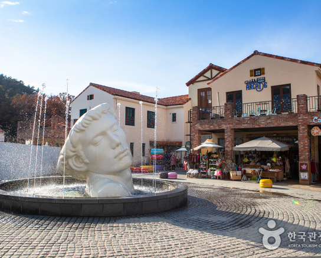
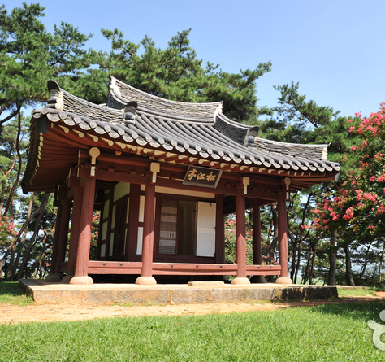
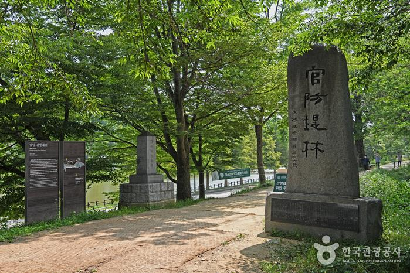
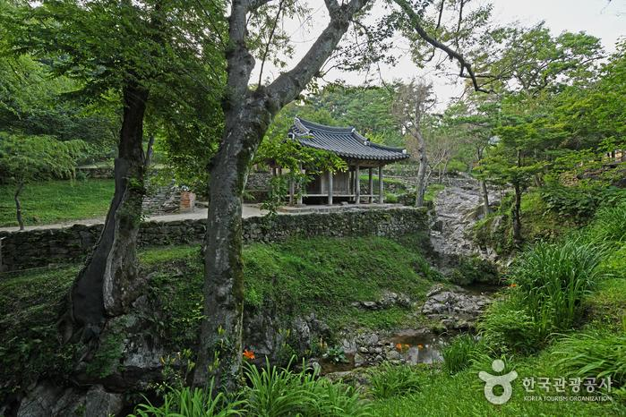

주요 관광지
-

메타프로방스
연간 약 500만명의 관광객이 방문하는 전라남도 담양에 조성되어 있는 관광단지로 메타세콰이아 길 바로 옆에 위치해 있으며 휴양지로 유명한 프랑스의 도시 프로방스를 그대로 옮겨놓은 듯한 감성을 가지고 있다.
-

송강정
송강 정철이 대사헌을 지내다 정쟁으로 물러나와 죽록정을 중수하여 송강정이라 일컬었으며 1955년 후손들에 의하여 중수되었고 사미인곡 시비가 세워져 있다.
-

담양관방제림
강 주변으로 약 3~400년에 달하는 아름다운 나무들이 빼곡히 자리하여 약 2km에 달하는 거대한 숲을 이루고 있다. 담양읍을 지나 흐르는 담양천의 북쪽 제방에 많은 나무들이 있는데 담양읍 남산리 동정 마을부터 천변리 우시장까지 연장되어 있고, 지금은 수북면 황금리를 거쳐 대전면 강의리까지 이어져 있다.
-

담양 소쇄원
소쇄원은 전남 담양군에 위치한 우리나라 대표의 민간원림이다. 소쇄원이라 한 것은 양산보의 호인 소쇄옹에서 비롯되었으며, 맑고 깨끗하다는 뜻이 담겨있다. 1,400여 평의 공간에 지어진 건축과 조경물은 조선시대 선비들의 심상이 오롯이 묻어나는 공간으로 알려져 있다.
맛집 및 카페
-

옥담
카페/베이커리
주소 | 전남 담양군 봉산면 연산길 89-11 -

남도예담
한식
주소 | 전남 담양군 월산면 담장로 143 -
창평국밥
한식
주소 | 전남 담양군 창평면 사동길 12-12